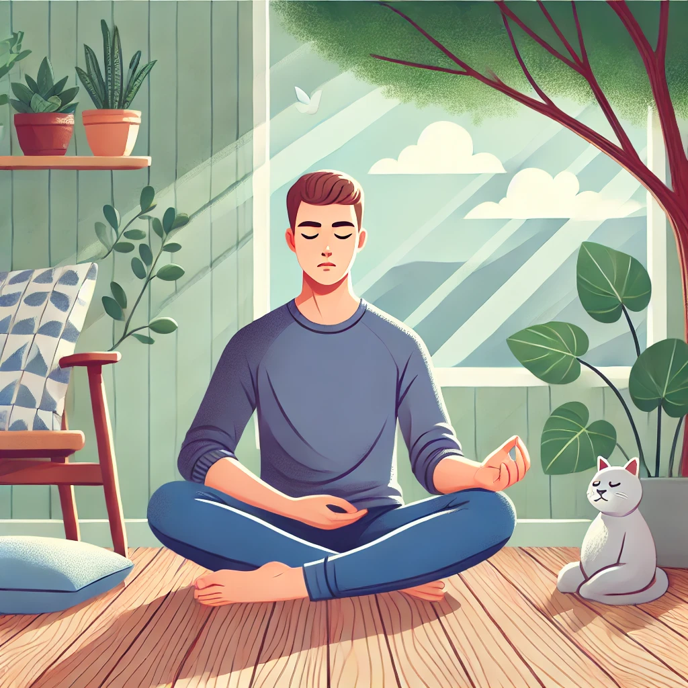
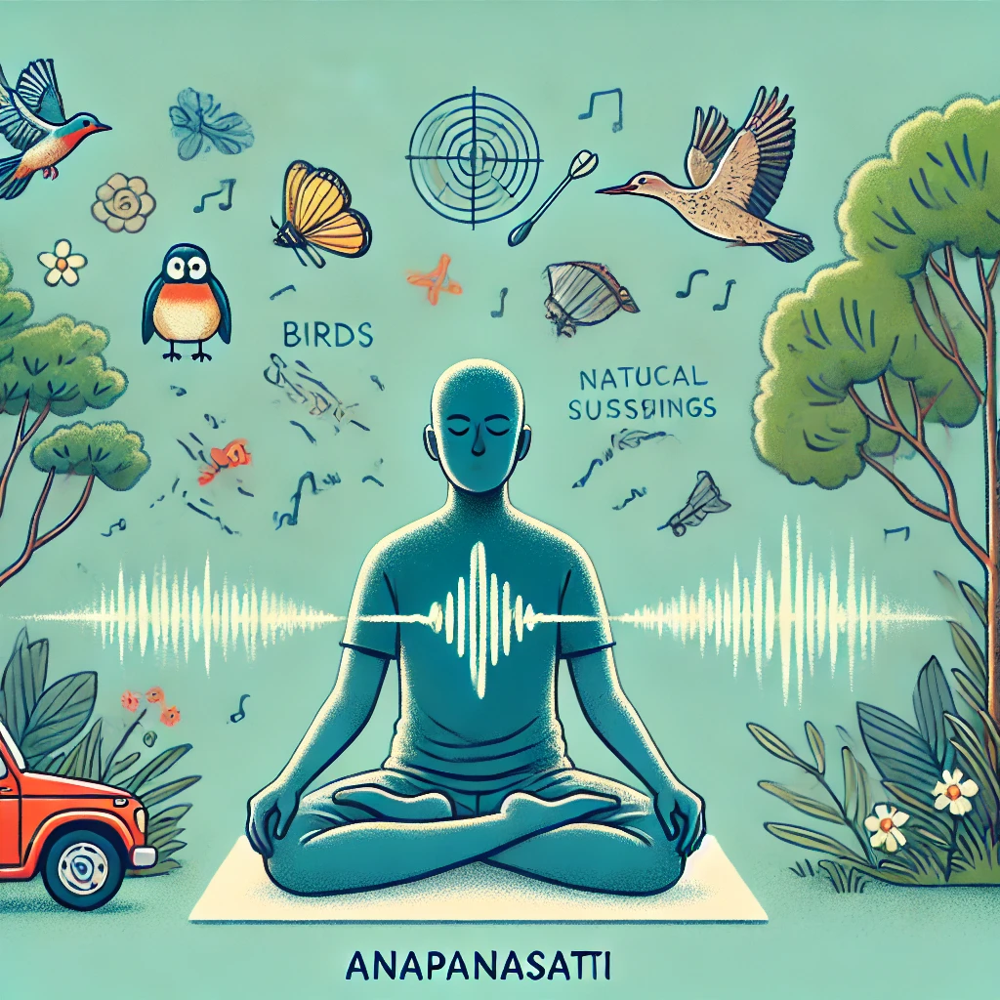

अनापानसति योग (श्वास जागरूकता ध्यान)
ओशो द्वारा सिखाया गया अनापानसति योग एक शक्तिशाली माइंडफुलनेस ध्यान है, जो श्वास की जागरूकता पर केंद्रित है और बाहरी दुनिया और स्वयं का अवलोकन करता है। नीचे दिए गए चरणों का पालन करें और सुबह-शाम, तीन महीने तक नियमित अभ्यास करें।
कैसे करें: ऑडियो डाउनलोड करें और इन सरल चरणों का अनुसरण करें।
1. पहले 10 मिनट: श्वास पर ध्यान केंद्रित करें
आराम से बैठें, अपनी आँखें बंद करें, और अपनी प्राकृतिक श्वास पर ध्यान केंद्रित करें। हर श्वास अंदर लेने और बाहर छोड़ने का अवलोकन करें बिना उसे बदले या नियंत्रित किए।
2. अगले 10 मिनट: ध्वनियों की जागरूकता
अपनी श्वास पर ध्यान केंद्रित करना जारी रखें, और किसी भी बाहरी ध्वनि के प्रति जागरूक बनें। उन्हें मौजूद रहने दें, बिना आपके आंतरिक ध्यान को भंग किए।
3. तीसरे 10 मिनट: स्वयं का अवलोकन करें
अपनी श्वास का अवलोकन करते रहें, लेकिन अब स्वयं का भी अवलोकन करें। एक दर्शक की तरह अपने विचारों, भावनाओं और संवेदनाओं को देखें, बिना किसी लगाव के।

4. अंतिम 10 मिनट: श्वास और दुनिया दोनों का अवलोकन करें
अपनी श्वास और बाहरी दुनिया का अवलोकन करते रहें, अपने अंदर और आसपास होने वाली सभी घटनाओं के साक्षी बनें। किसी भी लगाव को छोड़ दें और केवल देखें।